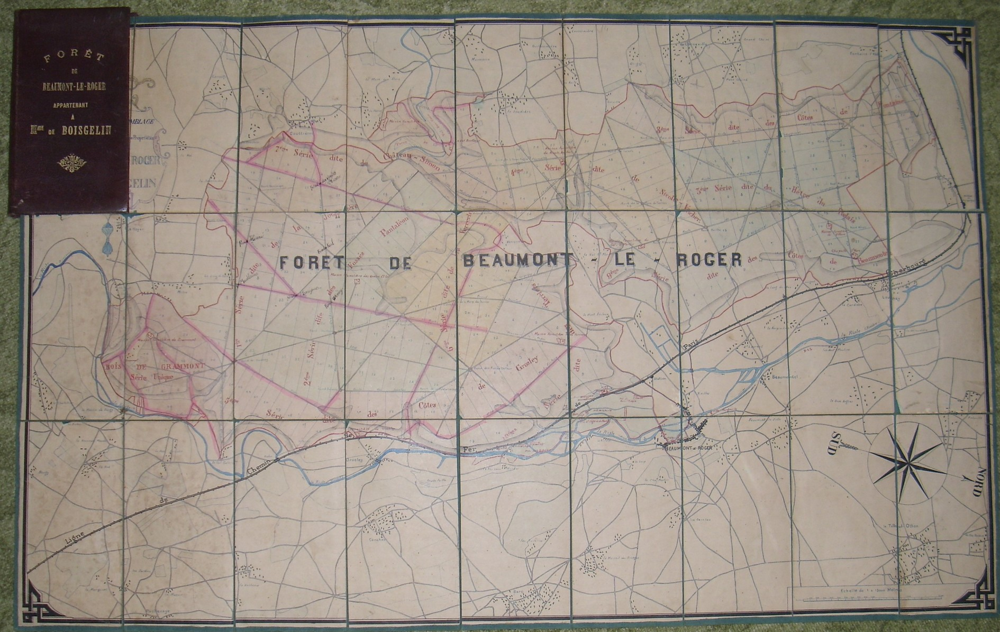
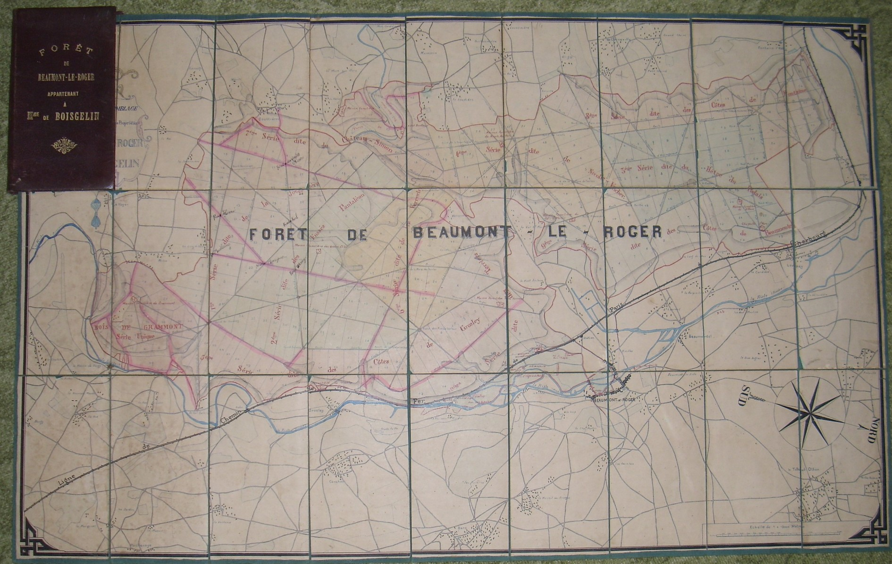

|
Louis-François-Xavier Declercq
Posted: 25th
January 2017 by admin in
Histoire,
Préaux
Tags:
Beaumont-le-Roger,
Boisgelin,
Declercq,
Guémené,
Histoire,
Lefèbvre-Boucher,
Lefèbvre-Meuret,
Oignies,
Préaux,
Rohan,
Soubise
J’ai
retravaillé et complété mon ancien article. J’espère que la compréhension en
sera facilitée, car c’est une affaire assez compliquée qui a fait quand même
couler assez d’encre au XIXe siècle, mais qui, aujourd’hui, ne laisse plus guère
de traces, au point que notre personnage passerait presque pour un homme
estimable. Enfin, c’est ce qu’on aimerait bien nous faire croire. Le plus
important ne se tient cependant pas là. Dans l’histoire de notre commune,
c’était surtout un passage resté obscur, mais ni plus important, ni moins
important que les autres sujets de recherche, juste une facette parmi d’autres,
nombreuses, d’un siècle particulièrement intéressant.
Ce que ne savaient pas les membres des conseils
municipaux de la Vieux-Rue et de Préaux, c’est que l’homme qui mena au nom des
héritiers du prince de Soubise les charges en 1813 et 1817 contre les deux
communes afin de leur reprendre la possession des terrains communaux, ce
Louis-François-Xavier Declercq
(note 1), serait bientôt le copropriétaire affiché de la forêt de Préaux. Les
héritiers Rohan, beaucoup trop naïfs et malléables, se laissèrent déposséder de
leurs biens par leur propre chargé d’affaires. Petit-Jean, dans un article du
Monde illustré, en 1858, expliquera plus tard les combines de Declercq, telles
que le procès la même année en fit la démonstration :
C’était un homme habile que ce Declercq : dès
1797, n’étant encore que simple surnuméraire de l’enregistrement, il avait
pénétré du même coup dans la confiance et les affaires de Mme de Guémené.
Chargé par elle d’administrer ses biens et de les disputer aux créanciers qui
surgissaient de toutes parts, voici comment il s’y prit. Il commença par
diminuer, au moyen de baux fictifs, la valeur apparente des immeubles : cette
dépréciation amena celle des créances qui se vendirent à vil prix. Faire
racheter d’abord ces créances par des hommes à lui, faire poursuivre par les
porteurs de titres l’expropriation des immeubles, s’en rendre lui-même
adjudicataire et se libérer de son prix en payant au prix de leur valeur
nominale ces mêmes créances dont plusieurs avaient été acquises par lui à 14
pour cent de leur valeur réelle, tel fut le mécanisme général du système
d’opération, suivi par Declercq. Elles ne pouvaient, comme on voit,
s’accomplir qu’à l’aide d’un nombre considérable de prête-noms. Tous ces
gens-là eurent, bien entendu, leur part du gâteau. Ce qu’il y a d’individus
qui, depuis cinquante ans, ont vécu grassement de la succession Soubise est
inimaginable. Quant à Declercq il eut – et c’était justice – la part du lion.
On a décrit Madame de Guémené sous les traits
d’une personne entêtée, mais de peu de caractère. Elle et son époux, le
prince de Rohan-Guémené, réalisèrent la plus belle faillite de la fin de
l’Ancien Régime. Menant un trop grand train de vie, ils laissèrent une ardoise
de 33 millions… De sa famille, Madame de Guémené fut la seule à ne pas fuir à
l’étranger pendant la Révolution, afin de protéger le patrimoine familial. Ce
qui n’empêcha pas le gouvernement de mettre une partie des biens sous séquestre.
Cette Madame de Guémené mit toute sa confiance en ce
Louis-François-Xavier Declercq.
Petit fonctionnaire sans fortune, ce dernier grimpe vite les échelons de la
société. En 1803, associé au couple Lefèbvre-Boucher qui le finance, il
fait déjà l’acquisition, probablement à bon marché, du château d’Orcq, acheté au
comte de Woestenraedt, chanoine de Tournai, qui avait émigré. Les associés de
Declercq, originaires de Tournai,
Piat-François-Joseph Lefèbvre, négociant, et son épouse Marie-Robertine-Joseph
Boucher, disposent d’assez de fortune pour financer les opportunités
que Declercq met en œuvre.
Vers 1817 les héritiers (note 2) sont
Louis-Henry-Joseph, duc de Bourbon Condé, Louise-Adélaïde de Bourbon Condé,
Marie Louise-Joséphine de Rohan, princesse de Rochefort, et
Berthe-Antoinette-Aglaé de Rohan. Tous sont les héritiers des deux filles de
Charles de Rohan, Charlotte de Rohan princesse de Condé (1737 – 1760) d’une part
et Madame de Guémené (1743 – 1807) d’autre part.
Petit-Jean continue :
En 1808, Mme de Guéméné décède, laissant pour
héritière la princesse de Rohan-Rochefort, sa fille, et la princesse Berthe,
duchesse de Montbazon, sa petite-fille. La princesse Berthe rachète la part de
sa tante et réunit ainsi sur sa tête tous les droits de la branche dans les
trois successions de Guéméné, de Marsan et de Soubise. Puis ces droits
eux-mêmes, elle les cède dans leur intégralité à un sieur Declercq, moyennant
une somme de 2,115,000 francs. […] Declercq, comme je l’ai dit, s’était mis en
règle vis-à-vis de la branche des Rohan, en rachetant à la princesse Berthe la
totalité de ses droits. Ce traité, ébauché avec la princesse en 1814 et
ratifié par les héritiers le 12 janvier 1830, fut tenu secret. Il y avait pour
cela deux raisons : la première, c’était d’éviter des droits d’enregistrement
considérables ; la seconde, d’empêcher l’exercice du retrait successoral. Un
mot barbare qu’il faut que j’explique à mes lecteurs :
Le retrait successoral est le droit donné à un
cohéritier d’écarter du partage d’une succession l’étranger qui aurait acheté
la part d’un autre cohéritier, à la charge de rembourser le prix que cet
acquéreur a légitimement payé. Or, il ne faut pas perdre de vue que la branche
des Rohan avait pour cohéritier, dans la succession Soubise et de Marsan, la
branche de Bourbon-Condé, que représente aujourd’hui le duc d’Aumale,
légataire universel du dernier duc de Bourbon. Longtemps ce deux princes, tout
en soupçonnant l’existence d’un acte de cession, se trouvèrent dans
l’impuissance de le prouver judiciairement. Declercq et sa veuve
niaient tout traité de cette nature, et les princes de Rohan se traînaient à
leur remorque.
Il fallait donc à Declercq empêcher que le duc
de Bourbon ne fasse capoter ses petites affaires en le tenant éloigné de la
duchesse de Montbazon. Diviser pour mieux régner, c’était ce qu’il y avait de
mieux à faire. Petit à petit la tâche de Declercq prend de l’envergure. Il
participe à la liquidation de la succession de Charles de Rohan qui concerne un
patrimoine immense, composé en partie de créances, mais surtout de biens
immobiliers répartis dans toute la France et en Belgique. A cela s’ajoutent
d’autres successions, celles de la comtesse de Marsan, sœur de Charles de Rohan,
celle du duc de Bouillon. Et puis bien sûr il s’agira surtout de poursuivre la
liquidation de la faillite Guémené, la pièce maîtresse des procédés de notre
personnage qui bientôt, les affaires marchant pour le mieux, s’enorgueillit de
la profession de banquier (note 3). On citera quelques bonnes affaires. En 1812,
nos compères font l’acquisition du moulin à eau de Saint-Vaast, à Frévent,
ancienne propriété de Charles de Rohan. Les terres et le château de Saint-Pol
sur Ternoise, saisis ; le domaine et le château de Vigny ; le domaine de
Guémené-sur-Scorff. Bien sûr, il arriva parfois que le duc de Bourbon,
mandataire de la liquidation du prince de Soubise, lui mit des bâtons dans les
roues. En 1817 celui-ci qui se rend compte de la situation tente de lui faire
obstacle. La réplique ne tarde pas. En 1820 Lefèbvre-Boucher et autres
créanciers aux ordres de Declercq font alors saisir les domaines de Vigny et de Longuesse. L’affaire se poursuivant devant un tribunal qui, même s’il déboute
les créanciers, n’empêchera pas Vigny de tomber entre les mains de Declercq. Il
est évident que les trois associés se jouent de leurs opposants, n’hésitant pas
à les intimider si nécessaire. On ne les inquiète d’ailleurs qu’assez peu. Ils
appartiennent dorénavant au monde des puissants. Ils achètent, revendent. Rares
sont les biens qui resteront entre leurs mains. Leur fortune croit rapidement.
Constituant du produit de leur maraude une communauté de biens, ils se réservent
pour leur usage personnel quelques belles propriétés qui appartinrent au prince
de Soubise, comme Préaux, Beaumont-le-Roger ou Carvin, somme toute un
remarquable capital foncier, cumulant les hectares de terres et de forêt par
milliers. Ou encore l’hôtel particulier de Masseran à Paris, ou les terres de
Oignies dans le Nord.
M. Declercq a été pendant de longues années un
très habile homme, un spéculateur ingénieux ; il a fait de belles opérations,
il a acheté des créances à bon marché, il s’en est fait rembourser
intégralement ; il s’est fait adjuger d’immenses propriétés à bon marché ; il
a réalisé de très gros bénéfices par la modicité du prix auquel il s’est fait
adjuger ces propriétés ou les a fait adjuger aux hommes qui étaient ces
associés ou ses prêtes-noms.
Declercq joue serré, se réfugiant constamment
dans les mensonges et faisant obstacle tant qu’il peut à ses adversaires. Il a
placé en première ligne les princesses de Rohan dont il se sert sans le moindre
scrupule, tant et si bien que le prince de Rohan-Rochefort, mortifié,
s’adressera en 1823 au banquier en ces termes :
Tâchez donc que ma femme ne soit pas sans cesse mise avant dans tous vos
procès ; elle s’y embourbe des compliments que je voudrais bien lui éviter.
En janvier 1834 les trois associés mettent fin à
leur communauté de biens. Declercq récupère les terres de Oignies et de Wahgnies,
la forêt de Beaumont-le-Roger, la propriété d’Orcq en Belgique, l’hôtel de
Masseran à Paris. La forêt de Préaux reste dans les mains des Lefèbvre-Boucher.
Mais quelques mois plus tard, le 28 avril 1834, Declercq épouse
Henriette-Aline-Françoise-Ghislaine Crombez, née à Tournai le 5 juillet 1812. Il
a alors une soixantaine d’années, elle en a vingt-et-un. Elle est la
petite-fille de Piat-François-Joseph Lefèbvre et Marie-Robertine-Joseph Boucher,
les associés de toujours. Un beau coup de plus à mettre à l’actif de Declercq
qui gardera ainsi la main sur les 1900 ou 2000 hectares de la forêt de Préaux
ainsi que sur la maison du bailliage. A son décès en 1838, Declercq était, à lui
seul, à la tête d’une fortune dépassant les 20 millions de francs.
Le décès de Declercq en 1838 met le feu aux
poudres, les affaires tournant plutôt mal pour sa veuve qui décide pourtant de
ne pas s’en laisser compter. Il s’agit maintenant de répondre à des accusations
de fraude et dol. La veuve doit tout d’abord se défendre de sa propre famille
qui se sent elle-même grugée lorsqu’elle découvre l’inventaire de la succession
Declercq en 1841. On trouve trace de procès entre la veuve Declercq et les
héritiers Lefèbvre-Boucher en 1841, 1842, 1844… Puis c’est au tour des héritiers
des anciens seigneurs floués, en particulier en 1845 du duc d’Aumale, légataire
universel d’Henri de Bourbon Condé. Très vite, les activités de Declercq ne
firent plus illusion.
Un jugement de 1849 déclara que le sieur
Declercq, mandataire de la famille de Rohan, n’avait pas obéi aux lois de la
délicatesse
C’est donc ainsi que dans cette société on
parlait de vol et de corruption. Procès de créanciers, d’héritiers de
créanciers, histoires de prête-noms, feront le quotidien des années qui
suivront, jusque dans les années 1870, des faits jugés trop anciens, presque
toujours marqués de prescription. Mais le grand moment fut cette nouvelle
procédure qu’engagea en 1856 le duc d’Aumale contre la Veuve Declercq. Celle-ci
engage les meilleurs avocats. Nous sommes loin d’une lutte inégale qui oppose
une jeune veuve à l’une des plus grandes fortunes de France. Léon Duval, avocat
du duc d’Aumale préfère lors de sa plaidoirie en avertir le tribunal :
On a voulu expliquer les transactions en
disant que Mme Declercq était une jeune femme sans expérience. Est-ce
sérieusement qu’on a prétendu cela ? Mme Declercq était et est encore l’esprit
le plus rassis, servi par un conseil formidable de jurisconsultes qu’elle a
nommés dans son interrogatoire. [...] Oui, Mme Declercq est une intelligence
servie par d’autres intelligences d’élite, comme nous autres nous sommes tout
simplement des intelligences servies par des organes terrestres.
En 1858, un article de l’Illustration indique
que le duc d’Aumale a gagné son procès, la veuve Declercq ayant finalement admis
l’entente entre son mari et la princesse Berthe, duchesse de Montbazon. Albert
de Lasalle se fait pessimiste :
Vous croyez sans
doute que la liquidation, ainsi déblayée de cette grave question, va marcher
d’un bon pas et toucher vite à son terme : détrompez-vous. « C’est beaucoup
espérer, a dit Me Léon Duval, d’en rêver la fin dans moins d’un siècle. » Et
Me Duval est en situation de savoir à quoi s’en tenir.
Et effectivement,
l’affaire se terminera par une transaction qui restera secrète. Les deux partis
négocièrent donc, le duc d’Aumale recevant un dédommagement « considérable » qui
ne plongea certainement pas la veuve Declercq dans la misère. On ne remit pas en
question les ventes de biens qui depuis des dizaines d’années s’étaient
déroulées dans la plus totale irrégularité. Et de crainte de ne pas voir la fin
de ce procès de son vivant, le duc d’Aumale, alors en exil en Angleterre, se
contenta du dédommagement. L’affaire en resta là. L’illustration indiquera
finalement
Et voilà comment l’affaire de la succession
Soubise n’obtient dans le monde qu’un succès d’estime.
La veuve Declercq ne finira donc pas sur la
paille, loin de là. En dépit des procès, Henriette se refaisait pendant ce
temps-là à Oignies une nouvelle santé financière. Car c’est dans le parc même de
son château que, dans le plus grand secret, on découvrit du charbon en 1842,
trouvaille à l’origine de la Compagnie des Mine de Dourges fondée en 1856 par
notre personnage qui obtint en 1852 la première concession minière du bassin du
Pas-de-Calais. La fortune souriait toujours autant aux Declercq. Pour en
témoigner, voici ce qu’écrira en 1871 dans son journal Martial Delpit, député à
l’assemblée nationale : « J’ai dans mon bureau M. de Clercq, le fils de la
richissime Mme de Clercq. »
Le couple Declercq eut deux enfants,
Berthe-Aline-Françoise-Marie née en 1835, et
Louis-Constantin-Henri-François-Xavier né en 1837. En 1855, en pleine période de
procès, la veuve Declercq marie sa fille à Alexandre-Marie de Boisgelin qui voit
là l’occasion de faire un mariage exceptionnel. Peu importe les procès et ce que
l’on raconte dans les journaux sur Declercq. En 1855, sa veuve tient encore la
dragée haute à tous ses opposants.
La forêt de Beaumont-le-Roger comptait beaucoup
pour une famille noble attachée à l’apparence et aux traditions. C’est là plutôt
qu’à Préaux que les Boisgelin s’installent. Alexandre-Marie de Boisgelin se
lance très rapidement dans la politique. En 1865, Édouard Vittecoq, évincé de sa
fonction de maire de Beaumont-le-Roger par le nouveau seigneur local, règle ses
comptes avec ce dernier qui a décidé d’écarter les habitants des anciens usages
de la forêt (note 4).
Après M. Declercq, après madame Declercq, est survenu M. de Boisgelin, leur
gendre, tenant en sa main sa riche dot, une belle dot, ma foi, ou plutôt celle
de sa femme. Il a fait aussitôt retentir tous les échos de notre forêt des
bruyants éclats de son cor de chasse. A cela je ne trouve rien à redire. Je ne
lui dénie pas ses droits de propriétaire, je les proclame hautement sacrés,
légitimes, inviolables ; mais qu’il reconnaisse aussi les nôtres !
L’époux de Berthe De Clercq – le nom s’écrit
comme cela dorénavant –, occupera non seulement le poste de maire de
Beaumont-le-Roger, mais celui de conseiller général de son canton dans l’Eure.
Installée sur son domaine de Oignies, une
propriété de 1200 ha, Henriette De Clercq vit de son côté une belle existence et
joue désormais à la bienfaitrice de ce lieu. Elle y mourra en 1878, son souvenir
imprégnant encore de nos jours l’histoire locale. Son fils,
Louis-Constantin-Henri-Xavier De Clercq, suit un chemin parallèle à celui de son
beau-frère, un chemin qui le verra élu maire d’Oignies, député du Pas-de-Calais
et conseiller général du canton de Carvin. On le connaît plus accessoirement en
tant que photographe amateur et grand collectionneur d’antiquités du
Moyen-Orient, une collection qui aujourd’hui se trouve au musée du Louvre.
N’oublions pas les descendants en Belgique de
Piat-François-Joseph Lefèbvre et Marie-Robertine-Joseph Boucher (note 5). On
parlera plus tard de l’immense fortune de Benjamin Crombez (1832-1902), à
l’origine de la station balnéaire de Nieuport-Bains qu’il voulait nommer
Crombezville, mais aussi de son frère Louis (1818-1895), bourgmestre de Tournai
en 1872. Tous les deux étaient les frères d’Henriette, la veuve De Clercq.
|
|
Bibliographie et sources
Achile Morin, Adolphe Chauveau, Journal des avoués, volume 67 , de Cosse et Dumaine, Paris 1844
Adolphe Chauveau, Journal des avoués, volume 73, Cosse et Delamotte, Paris 1848
Petit-Jean dans Le Monde illustré,
Août 1858
Ambroise Bosviel : Consultation pour 1° Plusieurs créanciers des successions de
Rohan-Guéménée 2° M. Navoit agissant comme cessionnaire d’autres créanciers
contre madame Veuve Declercq et ses enfants, 1867
Archives Départementales Seine-Maritime
Archives municipales Préaux 76
BORA Archives privées – Fond Rohan-Bouillon aux Archives nationales à Paris,
dépôt du comte Henri de Boisgelin dans les années 60-70.
Édouard Vittecoq, ancien maire de Beaumont-le-Roger, Les droits de la ville et
des habitants de Beaumont-le-Roger sur la forêt, Guignard, Évreux 1866
Hoverlant de Bauwelaere, Essai chronologique pour servir à l’histoire de
Tournay, Tournai 1832
H. Saint Denis, Notice historique de Beaumont-le-Roger, 1888
Jean Baptiste Sirey, Jurisprudence de la cour de cassation de 1791 à 1813,
Laporte 1822
Journal des avoués, volume 93, Marchal et Cie, Paris 1868
Journal du Palais, Volume 2, Paris 1847
Journal du Palais, Volume 17, Paris 1857
Jules Dufaure, Lorget (avoué), Mme veuve De Clercq contre M. le duc d’Aumale.
Succession du maréchal de Soubise. Réplique de Me Dufaure, défendeur de Mme De
Clercq, 1858
Le Cabinet de lecture et le cercle réunis : gazette des familles , volume 12,
1841
L’illustration , volume 32, Paris 1858
Louis Chauvelot (avoué), Affaires des héritiers Navoit … contre Mme Declercq et
autres … Jugement dont est appel, 1870
Meline, Cans, Pasicrisie ou Recueil général de la jurisprudence des cours de
France et de Belgique , 1851
Pol Defosse (dir.), Jean-Michel Dufays, Martine Goldberg Dictionnaire historique
de la laïcité en Belgique, éditions Luc Pire, Bruxelles 2005
Roger Huetz de Lemps, Aumale L’Algérien, Nouvelles éditions latines, 1961
Société historique et archéologique de Corbeil, d’Étampes et de Hurepoix,
Service de documentation et de cartographie géographiques, Mémoires et
Documents, volume 10, Picard 1964
|


 
{kind=link}